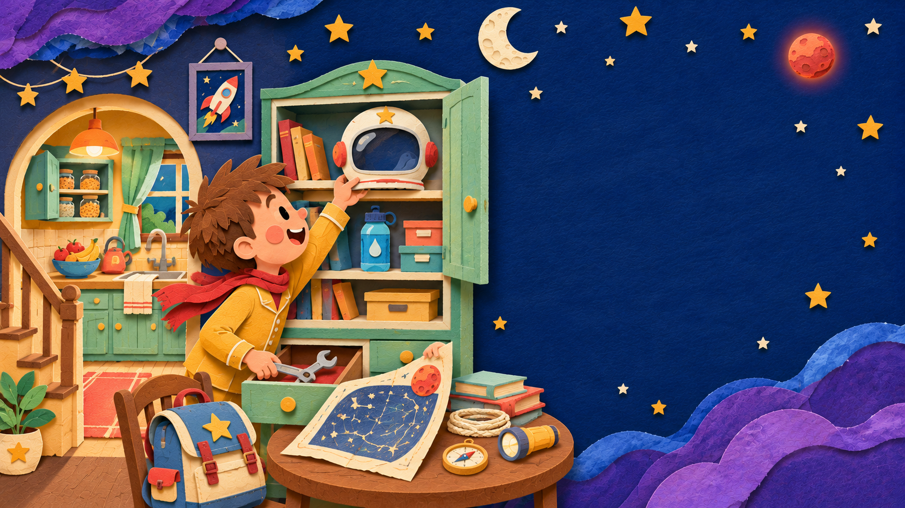

Page 2 of 729%
PAGE 2 · GATHERING SUPPLIES
Supplies for a rocket.
Johnny hurried around the house. He found a helmet, a wrench, a map, and water for the long trip.
Pack Johnny’s bag
Drag each item into the bag. You can also tap an item to pack it.
Drop supplies in Johnny’s bag
0 / 4 found